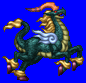
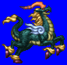
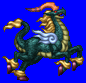
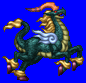

Height: About 5 meters Weight: ???
Habitat: ??? Origin: China
Meaning: ???
A mix of deer and cow from ancient Chinese lore. It is that culture's equivalent of a unicorn. At first, it was drawn simply, but as time passed, it has been embellished, being drawn more like a dragon with flame-shaped wings. A creature of the highest virtue, it appears only during the rule of a virtuous emperor. It detests the taking of life, even taking care not to crush an insect by mistake as it walks.